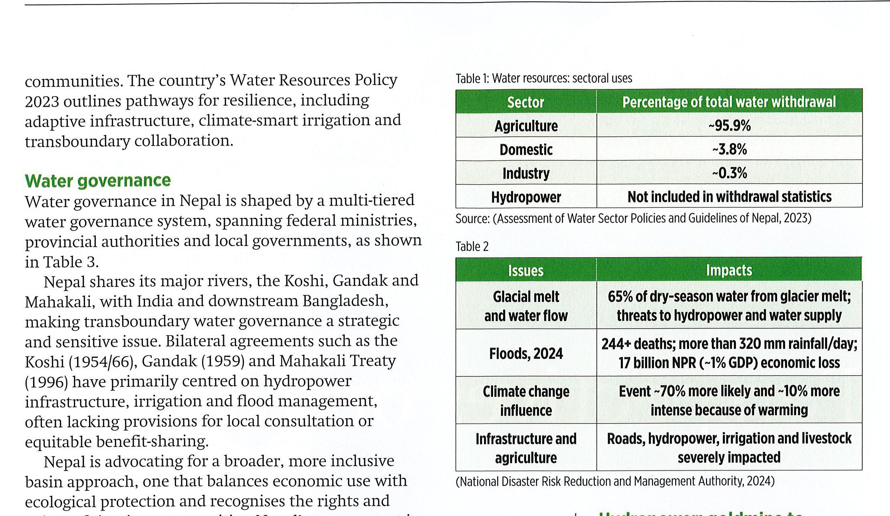
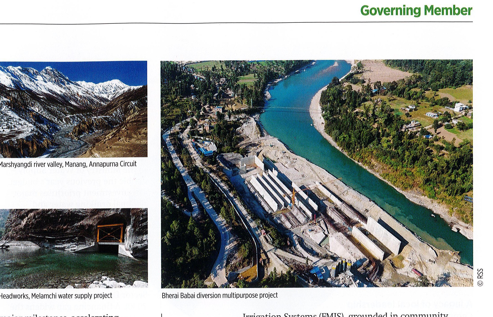
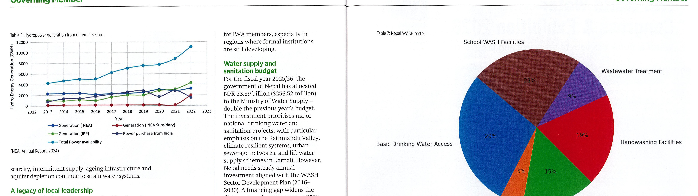

中文完整摘要說明
本文介紹尼泊爾豐富但高度脆弱的水資源。尼泊爾位於南亞重要河川源頭，擁有充沛降雨、眾多河流與高人均水資源量，但季節變化、儲水不足、治理缺口與氣候變遷造成慢性水不安全。文章說明尼泊爾水治理牽涉聯邦、省與地方多層級機構，也牽涉與印度、孟加拉等下游國家的跨境水外交。尼泊爾同時推進水電、灌溉、供水與衛生改革，並以社區主導模式、青年專業人才與 IWA Governing Member 身分連結全球水治理與山區韌性議題。
中文全文
尼泊爾位於南亞重要河川系統的源頭，坐落於喜馬拉雅山脈之中。Koshi、Gandaki 與 Karnali 三大流域都是恆河的重要支流，支撐尼泊爾本地以及印度、孟加拉等下游地區數億人的生活。尼泊爾平均年降雨量約 1500 毫米，擁有超過 6000 條河流與溪流，是區域內人均水資源量較高的國家之一。這些水資源支撐農業、生態系、濕地與文化實踐，但季節變化、儲水設施不足與管理缺口，使水安全仍然脆弱。
氣候危機讓挑戰更加嚴峻。喜馬拉雅山區升溫速度高於全球平均，冰川退縮、極端洪水、山崩與乾旱事件更加頻繁。冰湖潰決洪水、季節性河川流量改變與長旱期，不只影響水文，也影響糧食系統、基礎設施與社區安全。尼泊爾的水資源政策因此強調韌性路徑，包括適應性流域管理、氣候智慧型灌溉與災害風險治理。
尼泊爾水治理由多層級制度組成，涉及聯邦部會、省級機關與地方政府。主要河川又與印度及下游孟加拉共享，使跨境水治理具有戰略與敏感性。Koshi、Gandak 與 Mahakali 等協定過去多聚焦水電、灌溉與防洪，往往較少納入地方諮商與公平利益分享。尼泊爾因此主張更廣泛且包容的流域方法，平衡經濟利用、生態保護與沿岸社群權益，並透過 ICIMOD、SAWI 等區域倡議參與科學基礎的水外交。
水電是尼泊爾的重要潛力。近年尼泊爾已逐步達成電力里程碑，並開始向印度輸電，也探索與孟加拉的區域能源貿易。Upper Tamakoshi、Arun-3 與 Upper Karnali 等大型專案讓尼泊爾成為綠色能源出口國的候選者。然而，水電發展也面臨環境影響、社區遷移、地震風險、融資限制與氣候變遷對水文情勢的衝擊。灌溉方面，尼泊爾正擴大設施以提升農業韌性與糧食安全，農民管理灌溉系統仍在全國灌溉面積中扮演重要角色。
供水與衛生方面，尼泊爾憲法保障清潔飲用水與衛生為基本權利。去中心化改革與社區主導模式讓地方團體能管理服務，Melamchi 等大型專案與國際夥伴也提供支持。不過，城市與偏遠社區仍面臨水質、永續性、公平性、間歇供水、老舊基礎設施與地下水枯竭等問題。政府在 2025/26 財政年度提高水供應部預算，聚焦 Kathmandu Valley、氣候韌性系統、都市污水網路與 Karnali lift water supply schemes，但要達成 2030 年普及目標仍需穩定投資與制度改革。
文章最後指出，尼泊爾的社區主導模式、年輕人口結構與大學研究能量，提供水治理創新的基礎。2023 年尼泊爾加入 IWA 成為 Governing Member，象徵其更積極參與全球水對話。尼泊爾可在 IWA 平台上提出山區水塔保護、社區治理、跨境合作上游視角、山區韌性、廢水回收、循環經濟、氣候調適、自然解方與都市水韌性等議題，並透過區域對話促進南亞合作。
圖表與原文表格 / Figures and Tables



Original Full Text
Tripti Kharel, Suman Prasad Sharma,
Sanjeev Bickram Rana and Mandira Singh
Shrestha highlight
the dynamics and challenges of Nepal’s rich water resources.
eographically, Nepal lies at the source of some of South Asia’s most important river systems. Cradled by the Himalayas, it is a land where rivers shape culture, life and hope. Rich in water, it carries both the promise of abundance and the challenge of stewardship.
Its three major river basins — the Koshi, Gandaki and Karnali— are tributaries of the Ganges, and sustain hundreds of millions of people downstream in India and Bangladesh. The country receives an annual average rainfall of around 1500 mm and has more than 6000 rivers and rivulets, giving it one of the highest per capita water availabilities in the region. These resources support agriculture, ecosystems, wetlands and cultural practices that have evolved for centuries. Yet, seasonal variations, weak storage infrastructure and management gaps create chronic water insecurity.
Climate crisis and
increasing extremes
Nepal is on the front line of the elobal climate crisis. The Himalayas are warming faster than the global average. Glaciers are retreating, and extreme weather events such as floods, landslides and droughts are becoming more frequent. Glacial Lake Outburst Floods (GLOFs), shifts in seasonal river flow, and long dry periods now affect not only Nepal’s hydrology, but also its food systems, infrastructure and
ww We EF BN ot
communities. The country’s Water Resources Policy 2023 outlines pathways for resilience, including adaptive infrastructure, climate-smart irrigation and transboundary collaboration.
Water governance
Water governance in Nepal is shaped by a multi-tiered water governance system, spanning federal ministries, provincial authorities and local governments
.
Nepal shares its major rivers, the Koshi, Gandak and Mahakali, with India and downstream Bangladesh, making transboundary water governance a strategic and sensitive issue. Bilateral agreements such as the Koshi (1954/66), Gandak (1959) and Mahakali Treaty (1996) have primarily centred on hydropower infrastructure, irrigation and flood management, often lacking provisions for local consultation or equitable benefit-sharing.
Nepal is advocating for a broader, more inclusive basin approach, one that balances economic use with ecological protection and recognises the rights and voices of riparian communities. Nepal’s engagement in regional dialogues, such as the Koshi Basin Programme Initiative of the International Centre for Integrated Mountain Development (ICIMOD) and the South Asia Water Initiative (SAWI) administered by the World Bank, aligns with IWA’s mission to foster cooperative, science-based water diplomacy.
Hydropower: goldmine to
green grid
Nepal is often called a ‘hydropower goldmine’, with its rivers meeting domestic energy demands and enhancing regional energy security. In recent years, Nepal has achieved
laJOl TIME SltOles, dCCCieiatilie hydropower development and beginning electricity exports to India, along with regional energy trade with Bangladesh. Large hydropower projects such as the publicly funded Upper Tamakoshi (456 MW) and private ventures such as Arun-3 (900 MW) and Upper Karnali (900 MW) have positioned Nepal as a promising green energy exporter. However, the journey has not been smooth. Hydropower development has faced challenges, including environmental impacts, community displacement, seismic risks and financing constraints. Climate change also affects the hydrological regime and increases the risk to infrastructure, calling for adaptive climate resilient infrastructure planning and storage schemes.
Irrigation development and progress in Nepal
Nepal is actively accelerating its irrigation expansion to bolster agricultural resilience and food security. Irrigation facilities now cover approximately 1.531 million hectares, with about 612,000 hectares (40%) equipped for yearround irrigation, which represents only 17% of the total cultivable land (NIMIS,2025). Farmer-Managed
diiigativit ty 2 ee Le Rene ge ye ee ee ee leadership, account for around 70% of the country’s irrigated area. In addition, Nepal’s irrigation infrastructure spans more than 700,000 hectares across nearly 6045 systems nationwide. Aligning with national targets for 80% irrigation coverage by 2030, the government is embracing initiatives such as the Babai Irrigation Project’s pilot of real-time flow monitoring and soil moisture sensors, aiming to enhance efficiency, equity and resilience amid climate variability.
Water supply and sanitation: reforms and realities The Constitution of Nepal (2015) guarantees clean drinking water and sanitation as a basic right. Reforms through decentralisation and community-led models have empowered local groups to manage services, supported by major projects such as Melamchi and international partners. Yet challenges remain in ensuring quality, sustainability and equity, particularly for marginalised
and remote communities. In cities such as Kathmandu,
Power Trading Milestones
°690.5 MW sold to India via the Indian Energy Exchange (IEX) and bilateral agreements.
¢10,000 MW power export target to India within the next ten years
e40 MW slated for export to Bangladesh through a pending tripartite agreement.
(NEA, Annual Report, 2024)
Generation & Grid
Expansion
©3,200+ MW is the total installed power generation capacity
°Construction of the 220 kV transmission line from
Tumlingtar to Inaruwa
20,000 MW is the exportcapable transmission network target by 2035.
Consumer Services &
Electrification
eThe number of consumers has grown to
5.46 million, a 6.33% increase from the previous year.
eNEA serves 99% of the country's total households.
e"Electricity Road Map" aims to achieve 100% household electrification
—@— Generation ( NEA) =—@— Generation | NEA subsidary) —@®— Generation (IPP) —@— Power purchase from India
—@®— Total Power availability (NEA, Annual Report, 2024)
scarcity, intermittent supply, ageing infrastructure and aquifer depletion continue to strain water systems.
A legacy of local leadership
Community-led models are central to Nepal’s water management. For decades, water user committees, often led by women, have managed rural drinking water, small irrigation and spring-fed systems, drawing strength from social cohesion, local knowledge and legal recognition. These systems are vital in remote areas where centralised infrastructure is impractical.
The government now seeks to modernise them through capacity building, technical support and incentives, while safeguarding grassroots ownership. Nepal’s bottom-up governance offers valuable lessons
1
Policy / initiative Key features WASH Sector Roadmap for reforms, life-cycle financing, Development Plan partner alignment, municipal rollouts (2016-2030) under federalism
Cross-sector umbrella for drinking water, irrigation, hydropower, ecosystems, basin planning and multipurpose storage
National Water Resources Policy, 2020
Maley Supply e Defines roles across tiers of government, Sanitation Act 2022 & strengthens accountability in service deliver Regulation 2025 $ y y
Replaced the 1992 Act, codifies intergovernmental coordination and local rights in water governance
Water Resources Bill, 2024
Political commitment to universal access, introduces 20-year sector plan, ‘One House, One Tap,’ and National Sanitation Programme, emphasises inclusivity, climate resilience and global alignment
Prime Ministerial WASH Initiative, 2025
Se INE Ey, -E in Ne Meer nr eer sanitation projects, with particular emphasis on the Kathmandu Valley, climate-resilient systems, urban sewerage networks, and lift water supply schemes in Karnali. However,
Nepal needs steady annual investment aligned with the WASH Sector Development Plan (20162030). A financing gap widens the distance to universal access by 2030, requiring even greater future investment and reforms.
Knowledge, youth
and innovation
With more than half of its population under the age of 25, Nepal’s demographic profile is favourable for innovation. Universities such as Tribhuvan,
Kathmandu and Pokhara have expanded research programmes in hydrology, environmental engineering and water governance.
Young professionals are also increasingly engaged in global networks such as IWA’s Young Water Professionals Nepal, contributing to dialogues on water, sanitation and hygiene (WASH) services, the circular economy, and utility reform. Investing in this human capital is vital for sustaining innovation and adaptive capacity.
Nepal as an |WA Governing Member
In 2023, Nepal joined IWA as a Governing Member, timely recognition of its growing commitment to global water dialogue and sustainable development. As a Governing Member of IWA, Nepal is poised to play a vital role in addressing the water-related challenges associated with the impacts of climate change and in promoting sustainable practices within the region. This relationship brings to the global stage critical themes, such as the safeguarding of the Himalayan water towers that are vital to South Asia, promoting community-led governance, advocating upstream perspectives in transboundary cooperation, enhancing mountain resilience, advancing wastewater reuse, and strengthening local capacity. Nepal is prioritising active participation in IWA’s strategic platforms, with emphasis on resource recovery, circular economy approaches, climate adaptation, nature-based solutions and urban water resilience, while also expressing interest in co-hosting regional dialogues to reinforce South Asian collaboration under the IWA umbrella.